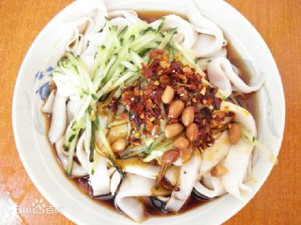
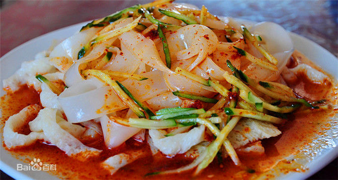
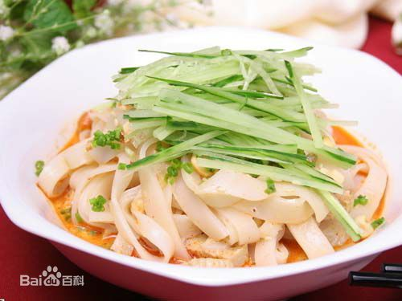

营养价值
冬天吃面皮你能保暖，夏天吃你能消暑，春天吃你能解乏，秋天吃你能去湿，凉皮真可谓是四季皆宜、不可多得的天然绿色无公害食品。《本草纲目》上说：米能养脾，麦能补心。根据原料选用和制作方法的不同，各地叫法也不同。
制作方法
步骤
1、500克面粉，3克左右的盐，和成面团，盖上湿布醒30分钟左右
2、将上述所得面团放在一大容器里，加适量水，开始洗面筋，在水中不停的揉捏面团，待容器里的清水混稠时，将其用滤网滤到另外的容器里
3、洗五六遍左右，直到水不再浑浊，剩下那一下块黄黄的东东就面筋啦，在面筋里加点发酵粉抓匀，上蒸屉，足气蒸20分钟，晾凉后切片（PS：也可以不蒸，用油炸下，然后炒着吃，味道也不错）
4、然后就是所得面糊啦，让其静置分层，一般至少要沉淀3小时，偶是头天晚上洗好，第二天才蒸的，面糊沉淀的时间越长，做出的凉皮儿越筋道。
5、沉淀完成后，把上面的清水倒掉，用勺子把下面的沉淀搅匀，就可以蒸了。
6、锅上火入水，待水沸，往模型（有专门蒸凉皮的模子，偶用的是曲奇饼干的盒盖，效果还可以）里刷少许油，舀一勺面糊倒入，面糊的多少由个人掌握，喜欢厚一点儿的凉皮儿就多舀一点儿，反之则少一些，把模型里的面糊荡匀，让模型底部均匀的盖上面糊。然后把模型放入开水锅中，盖上锅盖。烧开后转小火，将盛有面糊的盘子放进去，小火蒸3分钟即可。
7、在水池中蓄一池凉水，把模型放在里边漂着。也可以把模子倒置，用冷水直接冲其底部，这样效果 要好些， 等凉皮儿完全凉透，表面刷一些油，就可以慢慢剥下了，按自己喜好切成条就好了。
调料
大蒜水，辣椒油，糖少许，醋，香麻油（可根据个人口味），黄瓜（绿豆芽烫过水也可以）。
大蒜水：拨一两瓣大蒜，加少许水，用搅拌器打碎，然后加入少许盐和味精，搅拌使其溶化。
辣椒油的制作：先把500克油烧热，同时在一个大碗里放1杯辣椒面，1~2大匙胡椒粉，一小撮白糖(千万别多)，1大匙白芝麻，不要搅，就按顺序这么放着。等油冒烟之后关火，稍微晾晾，大概有个七八成热的时候就可以倒入辣椒了。先倒一半，用勺子搅匀，放2~3大匙花椒粉(或者是花椒粒)，再用勺子搅匀，然后另取一个小勺舀一点点凉水(也是千万不能多)倒入辣椒碗，搅匀，这个时候你会看见碗里象水开锅一样，但因为水很少，所以不会溅出来。凉皮是陕西人最喜欢的小吃！
凉皮吃法
不外乎两种，一种是凉吃，也是最常见的，一年中的春、夏、秋三季均可；另一种就是热吃，即把皮子蒸好后切好放在笼屉上，下有炉火加热，使皮子始终保持热腾腾的状态，这种吃法多在冬季，但也有一部分人大冬天仍要吃凉皮子，喜欢的就是那个爽劲儿。